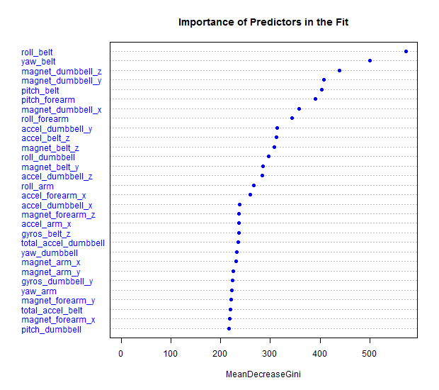

Krzysztof Koremba 20 Aug 2015
The goal of the model was to predict how people did their excersises using data from accelerometers on the belt, forearm, arm, and dumbell of 6 participants of the test.
First step of the project was to download the training data. It was acquired from the web:
download.file("https://d396qusza40orc.cloudfront.net/predmachlearn/pml-training.csv",
destfile = "pml_training.csv")
The second file contained 20 examples of unlabeled data
download.file("https://d396qusza40orc.cloudfront.net/predmachlearn/pml-testing.csv",
destfile = "pml_test.csv")
After downloading and reading the file, a quick examination of the data was made:
trainSet <- read.csv("pml_training.csv")
testSet <- read.csv("pml_test.csv")
str(trainSet)
summary(trainSet)
head(trainSet)
We can see that:
(i.e. skewness_yaw_dumbbell : Factor w/ 2 levels "","#DIV/0!": 1 1 1 1 1 1 1 1 1 ...)My initial goal was to remove variables with more than 50% of missing data, but since there were only two leveles of NA’s (0 and 98%) - then it was leaving only the completely filled variables:
na_vect <- sapply(trainSet, function(x) ifelse(is.na(x)|x %in% c("","#DIV/0!") ,1,0))
na_vect<- as.data.frame(na_vect)
na_stat <- sapply(na_vect, mean)
no_nas <- na_stat == 0
trainSet <- trainSet[,no_nas]
I have also removed timestamps, username, X (row number) and a “window” variables
$ X : int 1 2 3 4 5 6 7 8 9 10 ...
$ user_name : Factor w/ 6 levels "adelmo","carlitos",..: 2 2 2 2 2 2 2 2 2 2 ...
$ raw_timestamp_part_1: int 1323084231 1323084231 1323084231 1323084232 1323084232 1323084232 1323084232 1323084232 1323084232 1323084232 ...
$ raw_timestamp_part_2: int 788290 808298 820366 120339 196328 304277 368296 440390 484323 484434 ...
$ cvtd_timestamp : Factor w/ 20 levels "02/12/2011 13:32",..: 9 9 9 9 9 9 9 9 9 9 ...
$ new_window : Factor w/ 2 levels "no","yes": 1 1 1 1 1 1 1 1 1 1 ...
$ num_window : int 11 11 11 12 12 12 12 12 12 12 ...
As a result my final data set had 53 variables: 52 numeric predictors and a factor output (classe variable).
For modeling I used caret package:
library(caret)
First I made a split for training / test sample. I used 80% for training and 20% for testing:
inTrain <- createDataPartition(trainSet$classe, p=.8, list = F)
Tr <- trainSet[inTrain,]
Tst <- trainSet[-inTrain,]
The best results were produced with a random forrest algorithm, though it took a while a do all processing:
grid <- expand.grid(ntree = seq(100, 1000, by = 100), shrinkage = 0.1, mtry =20)
cvCtrl <- trainControl(method = "repeatedcv", repeats = 5, number = 10)
model_rf <- train(classe~., data = Tr, method = "rf",
expand.grid = grid, trControl = cvCtrl )
Variable importance for final model:

Resulst on Tr set:
confusionMatrix(predict(model_rf, Tr), Tr$classe)
Confusion Matrix and Statistics
Reference
Prediction A B C D E
A 4464 0 0 0 0
B 0 3038 0 0 0
C 0 0 2738 0 0
D 0 0 0 2573 0
E 0 0 0 0 2886
Overall Statistics
Accuracy : 1
95% CI : (0.9998, 1)
No Information Rate : 0.2843
P-Value [Acc > NIR] : < 2.2e-16
Kappa : 1
Mcnemar’s Test P-Value : NA
Statistics by Class:
Class: A Class: B Class: C Class: D Class: E
Sensitivity 1.0000 1.0000 1.0000 1.0000 1.0000
Specificity 1.0000 1.0000 1.0000 1.0000 1.0000
Pos Pred Value 1.0000 1.0000 1.0000 1.0000 1.0000
Neg Pred Value 1.0000 1.0000 1.0000 1.0000 1.0000
Prevalence 0.2843 0.1935 0.1744 0.1639 0.1838
Detection Rate 0.2843 0.1935 0.1744 0.1639 0.1838
Detection Prevalence 0.2843 0.1935 0.1744 0.1639 0.1838
Balanced Accuracy 1.0000 1.0000 1.0000 1.0000 1.0000
Results on Tst set (out of sample error estimation)
Confusion Matrix and Statistics
Reference
Prediction A B C D E
A 1114 4 0 0 0
B 2 755 9 0 0
C 0 0 675 10 0
D 0 0 0 633 1
E 0 0 0 0 720
Overall Statistics
Accuracy : 0.9934
95% CI : (0.9903, 0.9957)
No Information Rate : 0.2845
P-Value [Acc > NIR] : < 2.2e-16
Kappa : 0.9916
Mcnemar’s Test P-Value : NA
Statistics by Class:
Class: A Class: B Class: C Class: D Class: E
Sensitivity 0.9982 0.9947 0.9868 0.9844 0.9986
Specificity 0.9986 0.9965 0.9969 0.9997 1.0000
Pos Pred Value 0.9964 0.9856 0.9854 0.9984 1.0000
Neg Pred Value 0.9993 0.9987 0.9972 0.9970 0.9997
Prevalence 0.2845 0.1935 0.1744 0.1639 0.1838
Detection Rate 0.2840 0.1925 0.1721 0.1614 0.1835
Detection Prevalence 0.2850 0.1953 0.1746 0.1616 0.1835
Balanced Accuracy 0.9984 0.9956 0.9919 0.9921 0.9993
Model gives following predictions on pml-testing data (it scores maximum 20 points):
[1] B A B A A E D B A A B C B A E E A B B B